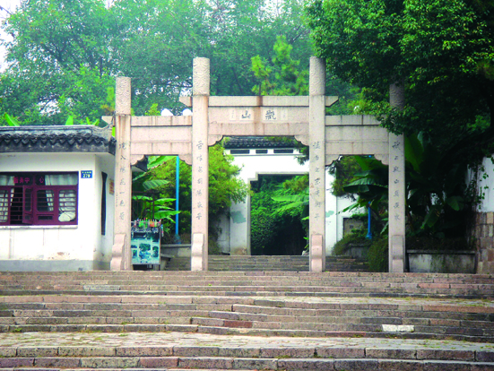

嘉兴市文物保护网 · 市级文物保护单位 · 2014-06-13 · 原文

瓶山位于嘉兴市南湖区建设街道瓶山社区中山东路，占地2000平方米，海拔约15米。传宋代此处设酒务署，堆放盛器，后弃之成岗，故称瓶山。登山可瞰市容全貌，冬雪之际，满山银妆，有“瓶山积雪”之称，是嘉禾八景之一。民国初年收为公产，民国七年（1918）将南湖烟雨楼中八咏亭移至山上（后毁，今重建）以增景色，山上还有一亭名为“月波楼”。建国后，瓶山辟为公园，山南脚下立一石坊，额“瓶山”，山上树木葱郁，供群众休闲，市人防指挥部亦设此处。人防工程中曾出土大量“韩瓶”。瓶山南麓有灵光井，为明朝兵部尚书项忠遗建，因临近灵光坊而得名。井直径36厘米，井圈高50厘米，外圈为正八边形，内圈呈圆形，井内口小底大，呈圆台状，井壁用青砖平砌。1988年，为保护灵光井，嘉兴市政府修石亭罩于井上，并于井旁立石碑告示后人。嘉兴境内一马平川，瓶山凭其得天独厚的地理优势，历来备受文人雅士推崇，是嘉兴名胜之地，有较高的历史价值。1981年两处合并公布为嘉兴市级文物保护单位。